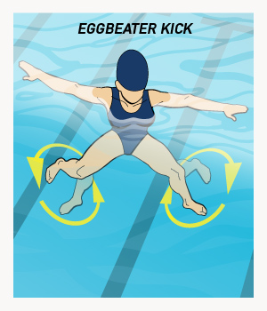

Importância do Treinamento no Polo Aquático
O polo aquático exige resistência, velocidade, força e habilidade técnica. O treino é fundamental para o desempenho individual e coletivo da equipa.
Técnicas Fundamentais
Natação (Figura1)
Crawl de cabeça erguida: Permite nadar com a bola e observar o jogo.
Viragens rápidas: Essenciais em contra-ataques e mudanças de direção.
Viragens rápidas: Essenciais em contra-ataques e mudanças de direção.
Posicionamento e Defesa (Figura2)
Marcação individual: Manter-se entre o adversário e a baliza.
Pressão zona: Defesa organizada por zonas do campo.
Pressão zona: Defesa organizada por zonas do campo.
Remates e Passes (Figura3)
Remates com rotação: Tiro potente com movimento do tronco.
Passe por cima: Ideal para ultrapassar a defesa.
Passe por cima: Ideal para ultrapassar a defesa.
Deslocamento Vertical (Figura4)
-
Pernada de eggbeater (bicicleta vertical): Técnica que permite manter o corpo fora de água com estabilidade.
 Figura 4: Pernada de eggbeater
Exemplo de Sessão de Treinamento
- Aquecimento: 10 minutos de natação contínua + mobilidade nos ombros.
- Técnica Individual: Dribles com bola, arremessos, deslocamento em zig-zag.
- Treino Tático: Simulação de jogadas, posicionamento defensivo.
- Jogo-treino: Divisão em equipas, foco na aplicação de técnicas.
- Alongamento: Relaxamento muscular e recuperação.